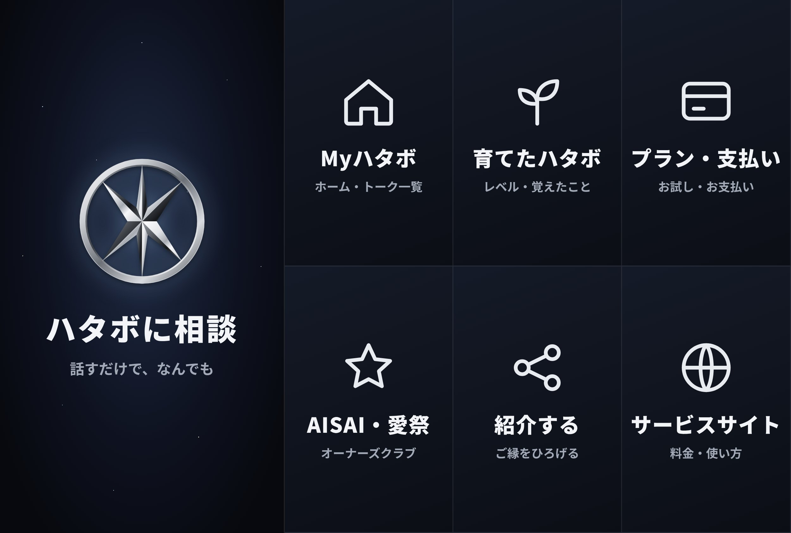

ONBOARDING
LINEでの申込相談から、お試し、本契約、そのあとの伴走まで。だれが、いつ、何をするかを並べました。
LINE FLOW
アプリはいりません。サイトから公式LINEへ。友だち追加から、申込相談、お試し、毎日の相談まで、ぜんぶLINEの中で進みます。
右下のボタンか、ページの「LINEで申込相談」を押します。パソコンでは、QRコードをスマホで読みとります。
友だち追加すると、ハタボからカードが5枚とどきます。横にめくって読めます。いちばん左の「ハタボに申込相談」から始めます。
暮らしやお仕事、いちばん困っていることを、ハタボが1つずつ聞きます。合うラインナップとグレード、月額の目安を、いっしょに選びます。お店や会社の細かいお見積もりは、担当につなぎます。担当と顔を見て話したいときは、「オンライン相談したい」と送ると、ビデオ通話（30分・無料）の時間を選べます。
「プラン・支払い」から申し込むと、いちばん上のZで10日間無料（1日30回まで）。11日目から、選んだプランに切りかわります。10日以内にやめれば0円です。
トークの下のメニューから、いつでも呼べます。

FAMILY
SHOP ／ COMPANY